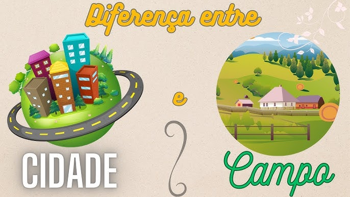

Conecção do campo a Cidade

Entre o campo e a cidade a uma dependẽncia um do outro. O campo abastece a cidade com produtos alimentações e produtos, e a cidade devolve o produto estilizado ou seja melhorado, sendo desse jeito uma correntes.
Diferença
O campo é cracterizado em um local rural ou seja caracterizado na agracultura. Ja a cidade é caracterizada por um espaço urbano ou seja comunidades diversificadas.